Я ждал.
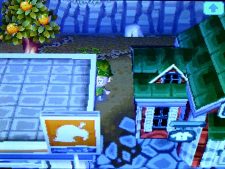
Очень долго ждал.
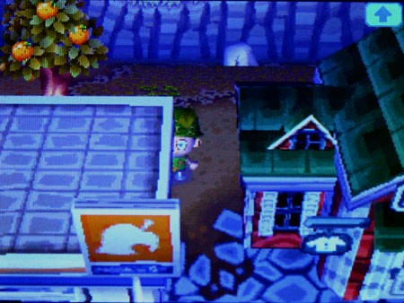
Всю ночь.
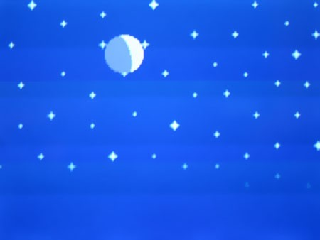
Нук так и не пришёл.
Было, предположительно, три часа ночи, и сонливость выводила меня из строя — это могло испортить весь наш план. Тихо, словно смерть, я скользнул за угол лавки и всмотрелся в непроглядную тьму магазина, пока ужас просачивался в моё воспалённое воображение.
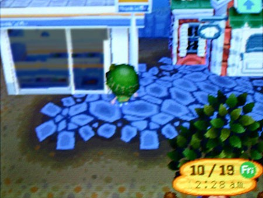
На мгновение мне показалось, что в темноте движутся тени — я чуть не убежал. Но это была всего лишь качающаяся стрелка старинных часов, которые Нук выставил сегодня. Вывеска «Закрыто» уже висела на двери.
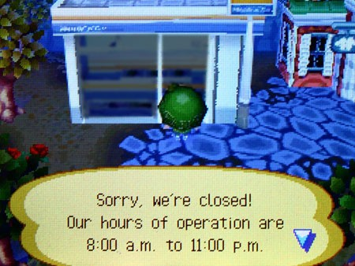
Простите, мы закрыты!
Время работы с 8:00 до 23:00
Дверь была заперта. Лавка опустела.
Я выругался сквозь зубы, совершенно сбитый с толку ночным исчезновением Нука. Неужели он мог знать, что я слежу? Неужели он мог быть настолько бесшумным? Он же всё-таки какой-то ёбаный енот — ночной вор. Я вглядывался вдаль, надеясь увидеть силуэт крадущейся фигуры, но там ничего не было.
Это был провал. Я уже начал мрачно пробираться обратно к своему дому, как вспомнил о ловушках-ямах. Я начал заметать следы, и вдруг в поле зрения появилось странное красное свечение. Я поднял глаза — слегка встревоженный, слегка заинтригованный — и увидел, что ночные облака отражали мягкое красное сияние, словно доносившееся издалека, и казалось, что оно слегка пульсирует.
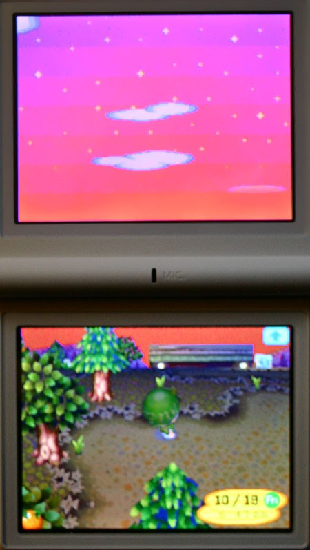
Небо засветилось, как на рассвете, но это была глубокая ночь. И тут я услышал сирену — далёкую, приглушённую.
Она звучала как туманный горн или сирена воздушной тревоги. А-УУУ-ГА! Я замер — это было жутко и завораживающе. Неужели это как-то связано с нами? Почему именно сегодня? Я быстро собрал всё и метнулся в дом, ожидая, что дверь вышибут разъярённые жители с ножами и вилами.
Я выглянул в щёлку. К моему облегчению, жители были так же ошарашены, как и я, и уже выходили из домов, чтобы посмотреть на небо. Через несколько минут красный свет погас. Я вышел к ним, делая вид, что и меня тоже разбудил этот шум.
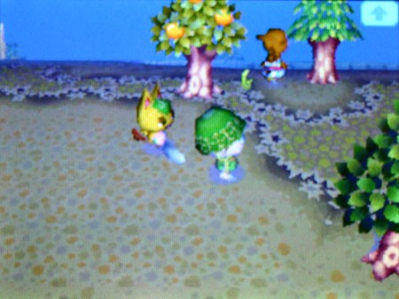
Кто-то перешёптывался, кто-то косо поглядывал, но вскоре всё стихло.

Мне никто не сказал, что случилось. Все советовали идти спать. Но они, кажется, и правда ничего не знали. По пути домой я услышал Тортимера: «Не видел такого лет десять». Десять лет? Неужели этот лагерь существует так долго? И где те дети?
Я подумал: может, кто-то из наших ошибся. Может, была драка или побег. Может, сегодня чья-то ночь стала последней. Может, нас раскрыли. Мне нужно было написать Пенни. Сначала надо дождаться, пока все разойдутся.
Я уже засыпал на ходу, когда жители разошлись по домам. Я нашёл ракушку, пометил её — и получил третий сюрприз за день.
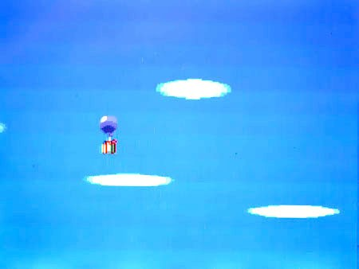
Шар? Утром? Похоже, у Пенни была та же идея, что и у меня, и она оказалась быстрее. Однако этот был не похож на её обычные шары. Он странно покачивался в небе — слишком тяжёлый, чтобы поймать ветер, и быстро снижался. Казалось, у него была течь. Я сбил его, пока никто не заметил, подхватил и рванул к дому.
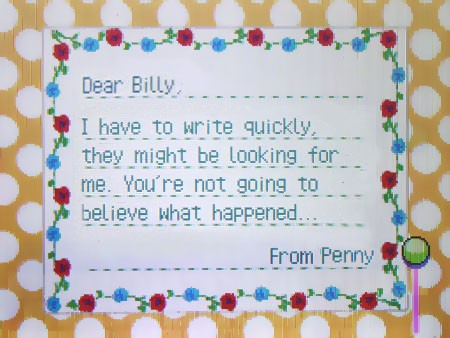
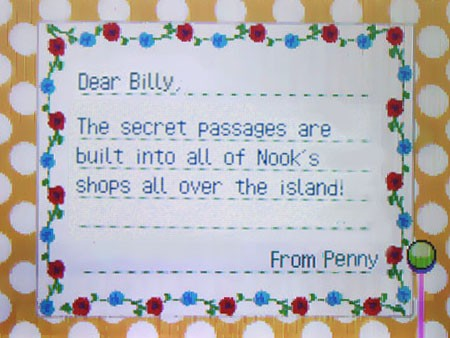
ОХУЕТЬ.
Я читал письмо Пенни очень медленно — мой уставший мозг с трудом разбирал слова. Я чувствую себя полным идиотом. Теперь я понял, почему не видел, как Нук свалил прошлой ночью: он вырыл себе туннель прямо под магазином. Вот почему он постоянно меняет товары и почему я никогда не вижу его на улице.
Пенни не могла ждать. Она знала, что Нука нет в её городе, и вломилась в свою лавку среди ночи, где нашла подземные ходы. Она пишет, что под островом есть целая сеть туннелей, соединяющая все лагеря, и набросала карту того, что успела изучить.
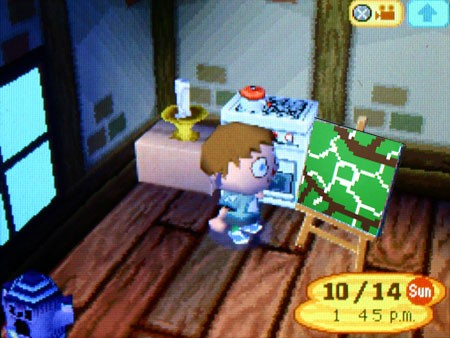
В центре карты был тот самый знак вопроса, который мы поставили, а белые линии — это туннели, которые расходились под каждым лагерем.
Но настоящий шок — главный туннель, который шёл по кругу в центре. Пенни нашла лестницу, ведущую из подземелья наверх. Она надеялась, что туннель приведёт к причалу. Но нет.
Он вёл к дому Нука.
Я бы обосрался, если бы внезапно оказался на пороге Нука, и свалил бы оттуда. Но не Пенни. Она вломилась внутрь. Нук построил свой дом в центре острова — как раз там, где я раньше поставил огромный белый знак вопроса. Пенни пишет, что дом роскошный, но совсем не охраняется. Нук, видимо, уверен, что к нему никто не сунется.
Но то, что она написала дальше, просто взорвало мне мозг. Пока Нук спал в своей спальне, она залезла в его кабинет, перерыла все его бумаги и украла всё, что смогла. Она уже собиралась уходить — и тут увидела его.
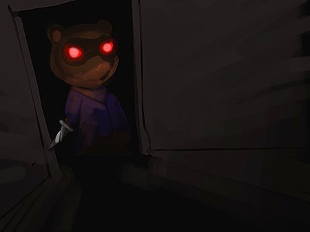
Я даже представить боюсь тот ужас, когда ты поднимаешь глаза и видишь, что Нук смотрит на тебя из темноты в своём же доме, и в его пустых глазах тлеет ярость. Она рванула что есть сил, выбила окно и включила сигнализацию, которая зажгла небо той ночью. Но она продолжала бежать. Каким-то образом она нашла дорогу обратно в свой лагерь, но знала, что влипла.
Нук видел её.
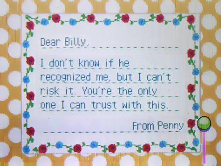
Она даже не успела прочитать, что украла.
Господи. В коробке лежит что-то интересное.
Я заглянул внутрь и сразу понял — это не типичный хлам.
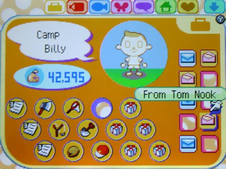
Она не слукавила. На руках были ответы на все мои вопросы — документы, которые должны были объяснить, почему я здесь и как отсюда выбраться. Коробка была переполнена помятыми папками, распечатками и бланками, описывающими каждое действие Нука.
Теперь у меня есть личные файлы Нука.